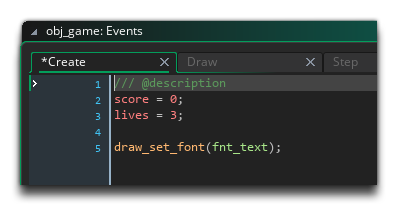
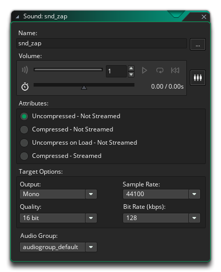
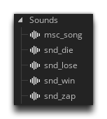

The time has come to add sounds to our game, but before we get on with that, take a moment to reset the score and lives variables in the Create Event of "obj_game". These should be set to 0 and 3 respectively, as we no longer need them set to other values for testing:

We'll now need some sounds for our game to use...
The sounds can be *.wav, *.ogg or *.mp3 format and have a "retro" sound to them. There are a number of different programs available free online for making sound effects and music for you to make your own sounds with, but note that the tutorial comes with a few to get you started as well in the TutorialResources folder, within the project files. If you open the file explorer to load a sound, it should open on that folder location where you can find the sounds used in the "SFX" sub-folder. If you have any issues, you can also find the sounds here.
Once you have located the example sounds or created your own, we need to add them to our project. Create a Sound in the resource tree and this will open up the Sound Editor, ready for you to add your first sound:

The sounds we'll need are as follows:
Go ahead and create each of those sounds now (naming them as shown in the list above) and give them an appropriate sound to use. When you're finished your resource tree should look like this:

Click the "Next" button to see how to get your game to play these sounds...